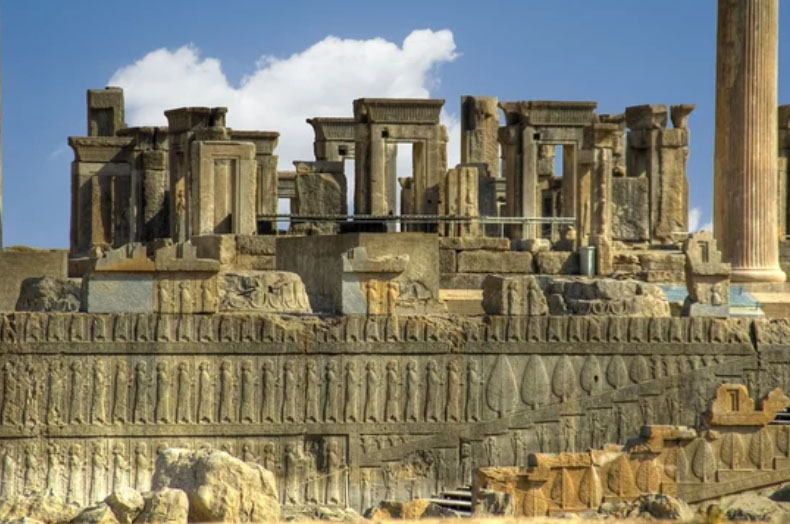
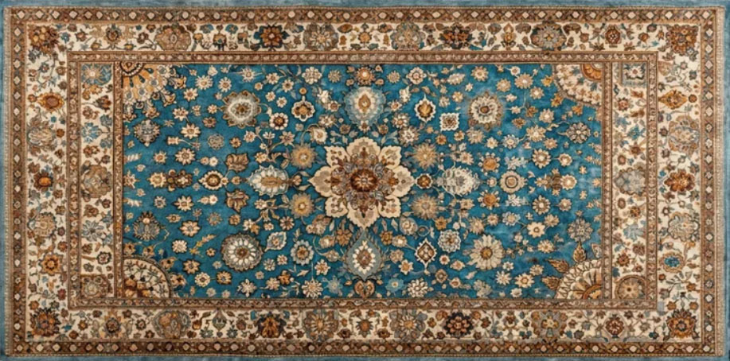
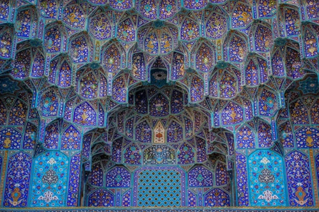
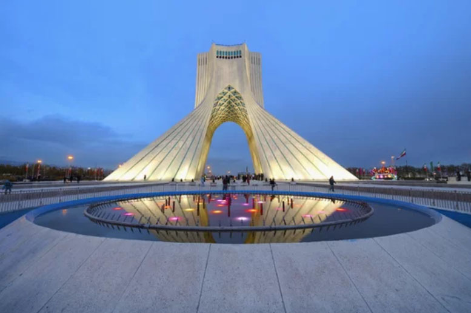
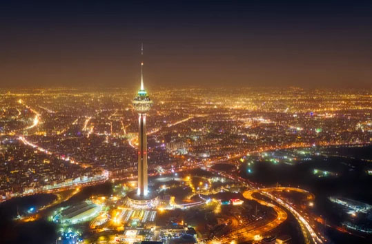
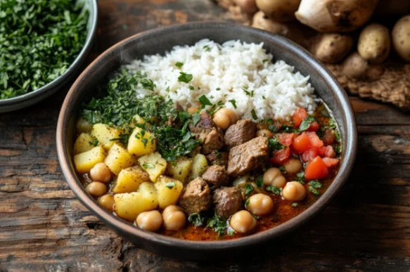

Shiraz(nearby)
Persepolis
The ruins of Persepolis, the ceremonial capital of the Achaemenid Persian Empire built by Darius I in the 6th century BCE.

Explore the timeless land of Persia, where great empires once rose and fell, shaping a legacy of stunning architecture, poetic culture, and enduring traditions.

The ruins of Persepolis, the ceremonial capital of the Achaemenid Persian Empire built by Darius I in the 6th century BCE.

Naqsh-e Jahan Square in Isfahan, a grand Safavid-era square surrounded by mosques, palaces, and bazaars.

Azadi Tower is one of Tehran’s most famous landmarks, known for its elegant design that blends traditional Persian architecture with modern style.
Iran’s vibrant capital, where modern city life meets rich history and culture.
A historic city famous for magnificent mosques, grand squares, and Persian architecture.
A charming city known for poetry, beautiful gardens, and the nearby ruins of Persepolis.

Explore Persian Cuisine

A classic Persian stew of lamb, chickpeas, potatoes, and tomatoes, traditionally served with bread.
Fragrant Persian rice topped with barberries and usually served with saffron chicken.
A traditional Persian frozen dessert made with thin rice noodles, rose water, and lime.
イラン・イスラム共和国の歴史
Iran’s rich history unfolds like the grand Chronicles of Persia, tracing its roots from the mighty Achaemenid Empire to its profound Islamic golden age. This enduring legacy is woven with monumental achievements in art, poetry, and science that shaped global civilization. Today, the nation stands as a proud guardian of this millennia-old heritage, bridging ancient traditions with modern resilience.
イラン高原で最初の文明を築いた王国。アッシリアによって滅亡
イラン北部を中心に勢力を拡大。アケメネス朝によって征服。
キュロス大王が建国し、古代オリエントを統一。アレクサンドロス大王によって滅亡。
アレクサンドロスの後継者による支配。パルティアによって滅亡。
イラン高原を支配した王朝。サーサーン朝によって滅亡。
ゾロアスター教を国教とし、ペルシャ文化を発展。イスラム勢力によって滅亡。
アラブ人による支配が始まり、イスラム教が広まる。
トルコ系民族による支配。ホラズム・シャー朝に滅ぼされる。
モンゴル帝国の一部として成立。ティムール朝に吸収。
シーア派を国教とし、イランのアイデンティティを確立。アフシャール朝に滅ぼされる。
ナーディル・シャーが建国。ザンド朝に取って代わられる。
カージャール朝によって滅亡。
イランの近代化を進めるも、パフラヴィー朝に取って代わられる。
近代化と中央集権化を推進。
イラン＝クーデタ(1953)：国王派(英米が支援)のクーデタによりモサデグ失脚。イラン革命(1979)によって滅亡。
イスラム革命後に成立。シーア派イスラム教を基盤とした政治体制。 宗教指導者ホメイニ(フランスより帰国)を指導者とするイスラム教十二イマーム派(シーア派)の法学者を支柱とする反体制勢力が政権を奪取。2026年2月28日、ハメネイ師死亡により、最高指導者の選定機関である専門家会議により、ハメネイ師の次男であるモジタバ・ハメネイ師が後継者に選出されました。
イランの歴史は非常に長く、数多くの王朝が興亡を繰り返してきました。1953年のクーデタは「アメリカが望んだ政変」であり、1979年の革命は「アメリカの影響を排除した国民の蜂起」であると言えます。